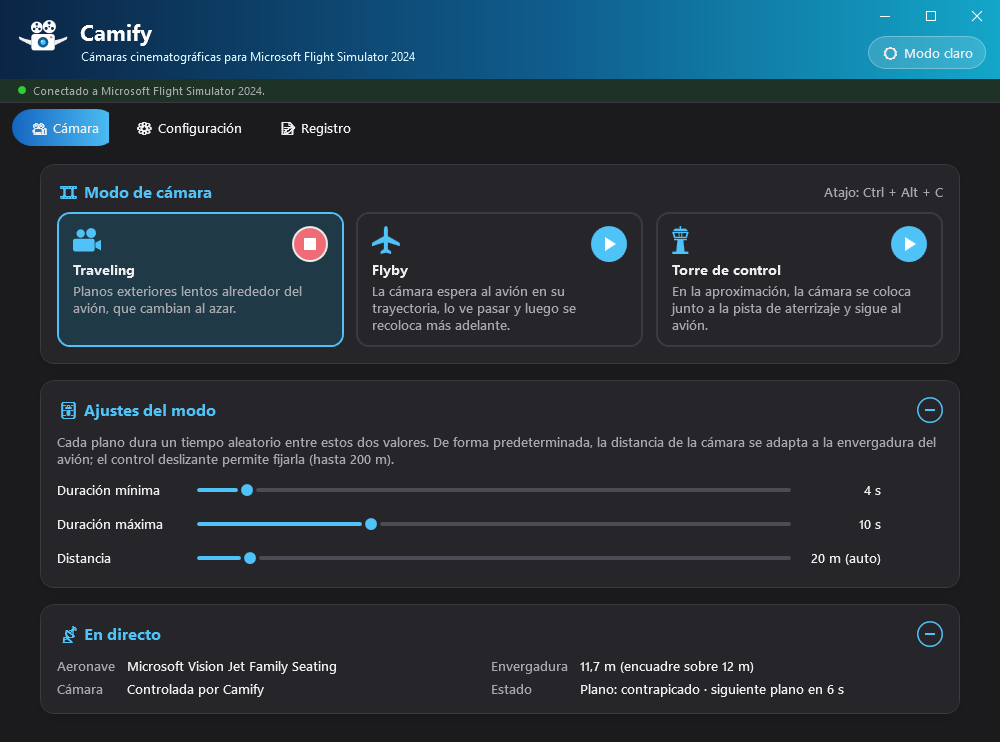
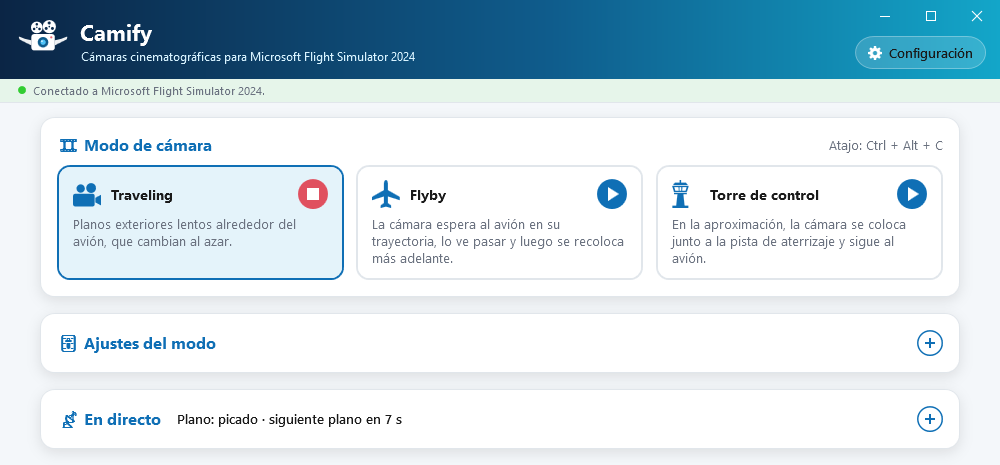
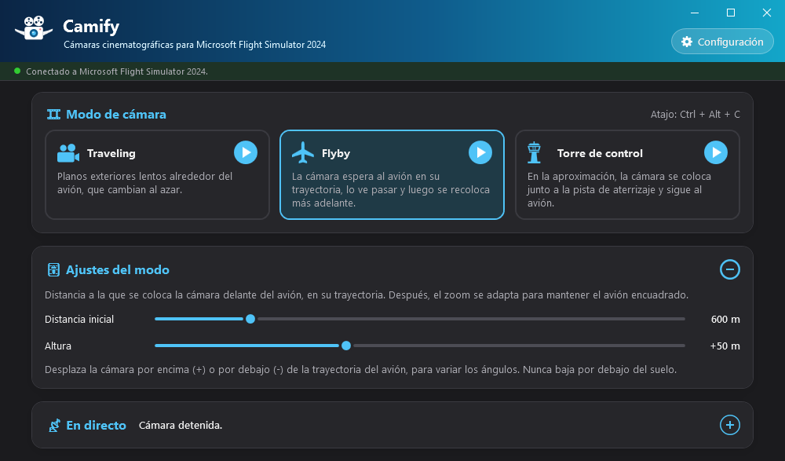
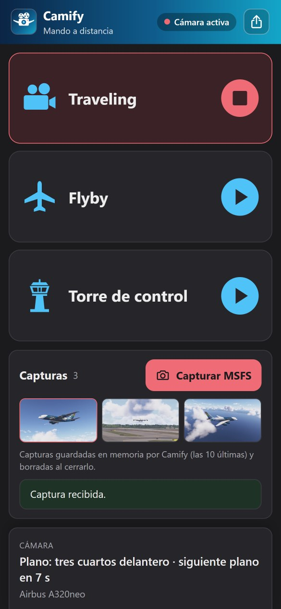
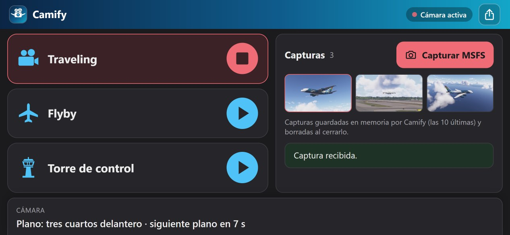
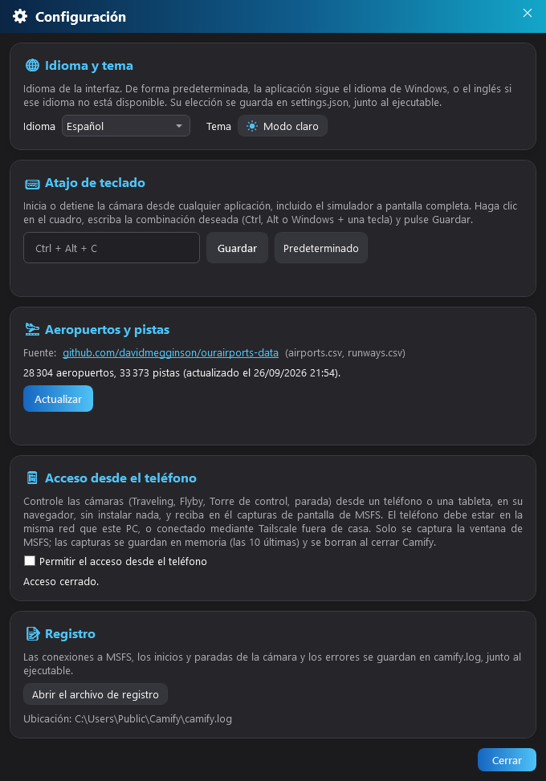

🎥 1. Presentación
Qué hace Camify y para quién.
Camify es una aplicación de Windows autónoma que controla la cámara de Microsoft Flight Simulator 2024 para filmar su avión como en el cine, mientras usted pilota o mientras el piloto automático vuela por usted. Utiliza la API de cámara de SimConnect, la interfaz oficial del simulador: no hay ningún mod que instalar en MSFS.
Tres modos de cámara, cada uno iniciado con un clic o un atajo de teclado:
- Traveling: planos exteriores lentos alrededor del avión, elegidos al azar (tres cuartos delantero, perfil, picado, vistas desde abajo y desde arriba, persecución…);
- Flyby: la cámara espera al avión en su trayectoria, lo ve pasar y luego se recoloca más adelante;
- Torre de control: en la aproximación, la cámara se coloca junto a la pista de aterrizaje y sigue su aterrizaje.
Los modos también se inician desde un teléfono o una tableta, que además recibe capturas de pantalla del simulador: vea Acceso desde el teléfono.
Camify nunca pilota el avión ni graba vídeo: coloca la cámara del simulador. Para conservar un recuerdo, utilice su herramienta de captura habitual (por ejemplo la Xbox Game Bar de Windows, Win + Alt + R).
🚀 2. Instalación y primer inicio
Un solo archivo que descargar, nada que instalar.
- Descargue
Camify.exedesde la página de versiones: github.com/kairhosen/Camify-releases. - Colóquelo en una carpeta propia (por ejemplo
Documentos\Camify): la aplicación escribe sus archivos junto al ejecutable. - Ejecútelo, antes o después de MSFS 2024: se conecta solo.
Camify requiere Windows 10 versión 2004 o posterior (se recomienda Windows 11). El ejecutable pesa 87 MB: contiene todo lo necesario, sin .NET ni otro componente que instalar. Para pasar a una nueva versión, basta con sustituir el ejecutable anterior: sus ajustes se conservan.
En el primer inicio, Camify descarga automáticamente los datos de aeropuertos y pistas (OurAirports), necesarios para el modo Torre de control. Solo se necesita conexión a Internet en ese momento; después, los datos se actualizan cuando usted quiera desde la Configuración.
camify.db (aeropuertos y pistas),
camify.log (registro),
settings.json (idioma, modo elegido, valores de los controles,
atajo, acceso desde el teléfono y su código) y theme.txt (tema claro u oscuro). Si mueve el ejecutable,
cópielos con él para conservar sus ajustes.
🖥️ 3. Interfaz general
Una sola ventana: el banner, el indicador de conexión y la cámara.
- Un banner en la parte superior que hace de barra de título: arrástrelo para mover la ventana, haga doble clic para maximizarla o restaurarla. Los botones minimizar, maximizar y cerrar están arriba a la derecha; en Windows 11, al pasar el ratón por el botón maximizar se abre el menú de diseños de ajuste de Windows para colocar la ventana en la mitad o un cuarto de la pantalla, por ejemplo junto al simulador;
- Bajo estos botones, ⚙ Configuración abre la ventana de configuración: idioma, tema claro u oscuro, atajo de teclado, aeropuertos y registro;
- Una barra de estado con un punto de color (rojo = no conectado, verde = conectado). Mientras MSFS no esté disponible, Camify reintenta la conexión cada 5 segundos, sin que usted tenga que hacer nada;
- Debajo, la cámara: los tres modos, sus ajustes y el estado en directo.
La aplicación se muestra en el idioma de Windows si está disponible (español, francés o inglés), y en inglés en caso contrario. Puede cambiarlo en la Configuración.
La altura de la ventana se ajusta sola a lo que se muestra (marco desplegado o plegado, modo elegido, idioma): la ventana se mantiene lo más compacta posible. Siempre puede redimensionarla por sus bordes.


🎞️ 4. Cámara
Elegir un modo, ajustarlo, iniciarlo — y seguir lo que hace la cámara.
Iniciar y detener
La ventana muestra tres tarjetas de modo: Traveling, Flyby y Torre de control.
- Hacer clic en una tarjeta la selecciona y muestra sus ajustes en el marco 🎚️ Ajustes del modo, sin iniciar la cámara;
- El botón redondo ▶ de cada tarjeta inicia ese modo. Se convierte en ■ mientras el modo está activo: un clic lo detiene, devuelve la cámara al simulador y vuelve a la vista que tenía antes (cabina, exterior, dron…);
- Solo un modo a la vez: iniciar un modo detiene el que está en curso;
- El atajo de teclado global (Ctrl + Alt + C por defecto), recordado a la derecha del título 🎞️ Modo de cámara, detiene el modo en curso o inicia el modo seleccionado — desde MSFS, incluso a pantalla completa.
Los cambios en los controles deslizantes se aplican de inmediato, incluso con la cámara en marcha, y se conservan para la siguiente sesión.
Modo Traveling
Camify encadena planos exteriores elegidos al azar. Durante cada plano, la cámara se desliza suavemente (ligero travelling circular, subida o bajada, acercamiento o alejamiento, zoom), con una aceleración y una deceleración progresivas; el paso al plano siguiente es un corte. Dos planos consecutivos nunca son del mismo tipo.
| Plano | Punto de vista |
|---|---|
| Tres cuartos delantero | Delante del avión, de lado, ligeramente por encima |
| Perfil | De lado, a la altura del avión |
| Tres cuartos trasero | Detrás, de lado, algo por encima |
| Picado | Por encima del avión |
| Contrapicado | De lado, por debajo del avión (solo en vuelo) |
| Vista desde abajo | Casi en vertical bajo el avión (solo en vuelo) |
| Vista desde arriba | Casi en vertical sobre el avión |
| Primer plano del morro | Muy cerca del morro |
| Persecución | Detrás del avión, en su estela |
Ajustes
- Duración mínima y Duración máxima (2 a 30 s, 4 y 10 s por defecto): cada plano dura un tiempo aleatorio entre estos dos valores. Los dos controles se mantienen coherentes (el mínimo nunca supera el máximo).
- Distancia: distancia media de la cámara. Por defecto sigue la envergadura de la aeronave (un A380 se filma desde mucho más lejos que un C172) y el control muestra «(auto)». Muévalo para fijar un valor (5 a 200 m); el botón Auto vuelve al cálculo automático. Esta elección manual dura la sesión y vuelve a automático al cambiar de aeronave.
- Deriva vertical (0 a 20°, 10° por defecto): durante cada plano, la cámara sube o baja este ángulo, con el sentido elegido al azar. A 0°, la altura se mantiene fija durante el plano; a 20°, el movimiento vertical es bien visible.
Modo Flyby
La cámara se coloca, fija, lejos delante del avión en su trayectoria prevista (rumbo, velocidad respecto al suelo y velocidad vertical), ligeramente desplazada hacia un lado. Sigue al avión con un zoom adaptado a la distancia, lo ve pasar y alejarse, y vuelve a colocarse más adelante: casi siempre al otro lado de la trayectoria, a una distancia y una separación algo distintas en cada pasada.
Si el avión da media vuelta o gira lejos de la cámara, esta se vuelve a colocar delante de él. Con el avión estacionado, se sitúa a su lado, a la altura de una persona.
Ajustes
- Distancia inicial (100 a 3000 m, 600 m por defecto): distancia a la que se coloca la cámara delante del avión, con un margen del 10 % para variar las pasadas. Después, el zoom se adapta para mantener el avión encuadrado.
- Altura (−200 a +500 m, 0 por defecto): desplaza la cámara por encima (+) o por debajo (−) de la trayectoria, para variar los ángulos. Se añade una pequeña variación aleatoria en cada colocación.

Modo Torre de control
Inicie este modo en cualquier momento, por ejemplo al comenzar el descenso. Mientras el avión no esté en aproximación, se conserva la vista del simulador. En cuanto el avión está a menos de 3000 ft sobre el suelo y alineado con una pista, Camify:
- busca el aeropuerto más cercano (radio de 20 km) y la pista de aterrizaje;
- coloca la cámara una sola vez junto a la pista, a la altura de la zona de toma de contacto, a la altura de un edificio (12 m);
- sigue al avión, zoom incluido, sin mover nunca la cámara hasta que se detiene.
Este modo no tiene ajustes. Necesita los datos de aeropuertos y pistas: si están vacíos, aparece un aviso en rojo en el marco 🎚️ Ajustes del modo, bajo la descripción.
Panel En directo
El marco 📡 En directo se actualiza cuatro veces por segundo. Plegado, muestra el estado de la cámara a la derecha de su título (plano en curso, distancia, pista…); desplegado (botón +), detalla:
| Línea | Contenido |
|---|---|
| Aeronave | Nombre de la aeronave cargada en el simulador |
| Envergadura | Envergadura declarada por la aeronave y tamaño usado para el encuadre (acotado si la envergadura es desconocida o anómala, por ejemplo en un helicóptero) |
| Cámara | «Vista del simulador», «Controlada por Camify», «Tomada por otra aplicación» o «Desactivada en las opciones del simulador» |
| Estado | Lo que hace el modo: plano en curso y cuenta atrás (Traveling), distancia de la cámara (Flyby), aeropuerto, pista y distancia al eje (Torre), o motivo de una parada |
Paradas automáticas
Usted siempre mantiene el control: Camify se detiene y devuelve la cámara al simulador en los siguientes casos, con el motivo indicado en el estado.
- Cambia la vista en MSFS (tecla de vista, joystick, menú de cámara…): Camify lo detecta, se detiene al instante y mantiene la vista que acaba de elegir;
- se pierde la conexión con MSFS;
- la cámara ya la usa otra aplicación;
- las cámaras de complementos están desactivadas en las opciones del simulador;
- se produce un error (detalles en el Registro).
Al cerrar Camify, la cámara también se devuelve al simulador, que vuelve a la vista anterior.
📱 5. Acceso desde el teléfono
El teléfono como mando a distancia de las cámaras, y las capturas de MSFS en el bolsillo.
Desde un teléfono o una tableta (iPhone, Android…), en su navegador y sin instalar nada, puede:
- iniciar y detener los modos Traveling, Flyby y Torre de control, con grandes botones pensados para pulsarse sin mirar, como un Stream Deck;
- seguir el estado de la cámara (plano en curso, distancia, pista…) y la aeronave cargada;
- capturar la ventana de MSFS y recibir las imágenes en el teléfono, para guardarlas en Fotos.
El acceso está desactivado por defecto. El teléfono debe estar en la misma red que el PC (la misma Wi-Fi), o conectado mediante Tailscale fuera de casa.


Activar y emparejar
En la ventana Configuración, marco 📱 Acceso desde el teléfono:
- Marque Permitir el acceso desde el teléfono. La primera vez, Windows puede pedir que autorice Camify en su cortafuegos: acepte solo para las redes privadas.
- Elija la dirección del PC (red local, o Tailscale para un acceso fuera de casa) y haga clic en Mostrar el código QR.
- Escanee el código QR con la cámara del teléfono: la página se abre directamente en el navegador.
Controlar las cámaras
- Pulse un modo para iniciarlo: su botón se vuelve rojo con un cuadrado ■. Púlselo de nuevo para detenerlo. Iniciar otro modo detiene el que está en curso, como en Camify.
- En la parte inferior de la pantalla, el marco Cámara muestra el estado en directo (plano en curso y cuenta atrás, distancia de la cámara, pista…) y la aeronave. Las respuestas a los comandos (por ejemplo «MSFS no está conectado») también aparecen allí.
- La pastilla del encabezado indica la conexión: Conectado, Cámara activa, MSFS no conectado o PC inaccesible (nuevo intento automático).
- La página se adapta a la orientación: en horizontal, los modos pasan a la izquierda y las capturas a la derecha.
El teléfono no puede modificar nada más: ni los ajustes de los modos, ni el atajo, ni la configuración.
Capturas de MSFS
- Capturar MSFS, arriba a la derecha del marco Capturas, toma una imagen de la ventana del simulador (hasta 1920 px de ancho); el resultado («Captura recibida.» o el motivo de un fallo) aparece en la parte inferior del marco. Como máximo una captura cada dos segundos.
- Las 10 últimas capturas se muestran en miniaturas; la más reciente tiene un borde rojo hasta que la abre.
- Pulse una miniatura para abrirla a pantalla completa y pase a la anterior o a la siguiente con las flechas. Para conservarla: mantenga pulsada la imagen y luego «Guardar en Fotos» (iPhone) o «Descargar imagen» (Android), o use el botón Guardar.
Seguridad
- El código QR contiene un código secreto propio de su PC: sin él, el teléfono no recibe nada y no puede controlar nada. No lo comparta; se oculta solo al cabo de tres minutos.
- En caso de duda, Cambiar el código desconecta de inmediato todos los teléfonos y borra sus capturas: deberán escanear el nuevo código QR.
- Solo los dispositivos de su red local o de su red Tailscale pueden conectarse, hasta cuatro a la vez; las conexiones procedentes de Internet se rechazan.
- El teléfono solo envía una lista cerrada de comandos (iniciar un modo, detener, capturar, mostrar una captura): no puede modificar ningún ajuste ni leer ningún archivo del PC.
- Solo se captura la ventana de MSFS, nunca el resto de la pantalla. Las capturas se quedan en memoria en Camify, nunca se escriben en el disco y se borran al cerrarlo, al desmarcar el acceso o al cambiar el código.
El ajuste y el código se guardan en settings.json, junto al
ejecutable.
⚙️ 6. Configuración y registro
Idioma, tema, atajo de teclado, acceso desde el teléfono, datos de aeropuertos y registro.

El botón ⚙ Configuración del banner abre esta ventana sobre la ventana principal. Cada cambio se aplica y se guarda al instante: no hay nada que validar, Cerrar (o Esc) simplemente vuelve a la cámara.
🌐 Idioma y tema
Español, francés o inglés. Por defecto, la aplicación sigue el idioma de Windows. La
elección se guarda en settings.json.
Al lado, Modo claro / Modo oscuro
cambia el tema de toda la aplicación. En el primer inicio, Camify sigue el tema de
Windows; después, su elección se conserva en theme.txt.
⌨️ Atajo de teclado
El atajo inicia o detiene la cámara desde cualquier aplicación, incluido el simulador a pantalla completa:
- haga clic en el campo de entrada;
- pulse la combinación deseada: Ctrl, Alt o Win (opcionalmente con Mayús) más una letra, un número, una tecla F1–F24 o una tecla de navegación;
- haga clic en Guardar. Predeterminado vuelve a Ctrl + Alt + C.
Si otra aplicación ya usa la combinación, Camify lo indica y el recordatorio del atajo muestra «(no disponible)»: elija otra.
📱 Acceso desde el teléfono
Activa la página del teléfono, elige la dirección del PC, muestra el código QR y cambia el código secreto; la línea de estado indica el puerto de escucha (8742) y el número de teléfonos conectados. Todo se detalla en Acceso desde el teléfono.
🛬 Aeropuertos y pistas
Muestra el número de aeropuertos y pistas en la base de datos y la fecha de
actualización. El botón Actualizar vuelve a descargar los
archivos airports.csv y runways.csv de
OurAirports. Solo se conservan los aeropuertos grandes, medianos y pequeños con al menos
una pista utilizable. Puede cerrar la ventana durante la actualización: esta continúa.
📝 Registro
El historial técnico, para diagnosticar un problema: las conexiones a MSFS, los inicios
y paradas de la cámara y los errores se registran en camify.log,
junto al ejecutable, cuya ubicación se indica bajo el botón.
Abrir el archivo de registro lo abre en el Bloc de notas,
para leerlo o adjuntarlo a un informe de error.
A partir de 5 MB, el registro se renombra a camify.old.log
(que reemplaza al anterior) y comienza un archivo nuevo.
💡 7. Consejos y buenas prácticas
- Con el piloto automático, el Traveling se convierte en una auténtica película de crucero: alargue los planos (15 a 30 s) para un resultado más contemplativo.
- Para un flyby espectacular, reduzca la distancia inicial (200 a 400 m) y juegue con la altura: un poco por debajo para un paso visto desde abajo, bien por encima para ver el avión con el paisaje.
- Para la torre, inicie el modo al comenzar el descenso: espera la aproximación por sí solo, usted solo tiene que pilotar.
- Para retomar el control, basta con cambiar la vista en MSFS o usar el atajo de teclado.
- Con una sola pantalla y el simulador en ventana, ajuste Camify a una esquina con los diseños de ajuste de Windows 11 y deje sus marcos plegados: el estado de la cámara sigue visible a la derecha del título 📡 En directo.
- El teléfono como mando: junto al teclado o a la palanca de gases, inicia los modos con un toque sin apartar la vista de MSFS, y guarda las mejores imágenes del vuelo con Capturar MSFS.
- Con Carnet de Vol, ambas aplicaciones pueden funcionar durante el mismo vuelo: una registra el vuelo y la otra lo filma.
Archivos de la aplicación
🛠️ 8. Solución de problemas
«No conectado a MSFS 2024» nunca pasa a verde
Compruebe que Microsoft Flight Simulator 2024 está en marcha y que hay un vuelo cargado. El registro detalla los intentos de conexión. La reconexión es automática cada 5 segundos.
«SimConnect.dll falta o está alterada»
Camify incluye el cliente SimConnect y comprueba su huella antes de cargarlo. Este
mensaje indica un ejecutable dañado o modificado: vuelva a descargar
Camify.exe desde la página oficial de versiones.
La cámara está «Desactivada en las opciones del simulador»
Las cámaras controladas por complementos están desactivadas en las opciones de MSFS 2024: vuelva a activarlas en las opciones de cámara del simulador y reinicie el modo.
La cámara se detiene en cuanto toco el joystick
Es intencionado si la acción cambia la vista en MSFS (seta de vista, botón de cámara…): Camify devuelve entonces el control. Quite esa asignación en los controles del simulador, o reinicie el modo con el atajo.
El modo Torre de control se queda «en espera»
El avión debe estar a menos de 3000 ft sobre el suelo y alineado con una pista de un aeropuerto conocido a menos de 20 km. Compruebe que los datos no están vacíos (ventana Configuración) y actualícelos si el aeropuerto es reciente.
El atajo de teclado no hace nada
Puede que otra aplicación ya lo use: el recordatorio junto al título muestra entonces «(no disponible)». Elija otra combinación en la ventana Configuración.
El teléfono muestra «PC inaccesible»
Compruebe que Camify está abierto, que el acceso desde el teléfono está marcado y que el teléfono está en la misma Wi-Fi que el PC (no en una red de invitados, ni en 4G/5G sin Tailscale). Si Windows pidió permiso para el cortafuegos, debe concederse para las redes privadas, y la red del PC debe estar definida como «privada» en Windows.
El teléfono muestra «Código rechazado»
El código se cambió en Camify: escanee el nuevo código QR. En iPhone, elimine el icono antiguo de la pantalla de inicio y añádalo de nuevo.
La captura falla
MSFS 2024 debe estar en marcha y su ventana no debe estar minimizada. En pantalla completa exclusiva, cambie el simulador a pantalla completa en ventana. El registro da los detalles del error.
⚖️ Anexo — Fuentes de datos y licencias
Los componentes y datos de terceros que usa la aplicación, y sus condiciones.
| Elemento | Uso en la aplicación | Licencia / condiciones |
|---|---|---|
SimConnect.dll (Microsoft Flight Simulator 2024 SDK 1.7.3) |
Cliente SimConnect nativo x64, integrado sin modificaciones en
Camify.exe para comunicarse con el simulador |
© Microsoft Corporation, todos los derechos reservados. Se proporciona «tal cual»,
sin garantía, y está sujeto a los términos de licencia del Microsoft Flight Simulator
SDK, adjuntos a cada versión como MSFS-SDK-EULA.pdf. Solo se usa
con una copia de MSFS 2024 instalada legalmente. |
| OurAirports (ourairports-data) | Aeropuertos y pistas (airports.csv, runways.csv)
para el modo Torre de control, descargados en el primer inicio |
Dominio público (repositorio bajo The Unlicense); se proporciona sin garantía de exactitud. |
Microsoft Flight Simulator 2024, SimConnect y Windows son marcas de Microsoft Corporation. Camify es una aplicación independiente: no está afiliada a Microsoft ni aprobada o respaldada por Microsoft.